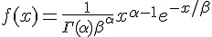
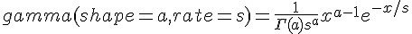
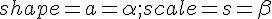
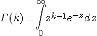
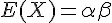
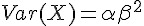
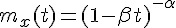

伽瑪分布 (Gamma distribution)

R 的寫法: 
Ｒ函數：Gamma(shape, rate)
- 公式： f(x)= 1/(s^a Gamma(a)) x^(a-1) e^-(x/s)
- 對應：[[  ]]
- 意義：指數分布與卡方分布都是 Gamma 分布的特例
- 網址：http://stat.ethz.ch/R-manual/R-patched/library/stats/html/GammaDist.html
Gamma 函數的定義: 
特性:
- 
- 
動差生成函數: 
R 程式範例一
op=par(mfrow=c(2,2))
curve(dgamma(x, 1,1), 0, 10)
curve(dgamma(x, 1,5), 0, 10)
curve(dgamma(x, 5,1), 0, 10)
curve(dgamma(x, 5,5), 0, 10)[[=image dgammaCurve4.jpg size="medium"]]
R 程式範例二
-log(dgamma(1:4, shape=1))
p <- (1:9)/10
pgamma(qgamma(p,shape=2), shape=2)
1 - 1/exp(qgamma(p, shape=1))
# even for shape = 0.001 about half the mass is on numbers
# that cannot be represented accurately (and most of those as zero)
pgamma(.Machine$double.xmin, 0.001)
pgamma(5e-324, 0.001) # on most machines 5e-324 is the smallest
# representable non-zero number
table(rgamma(1e4, 0.001) == 0)/1e4執行結果：
> -log(dgamma(1:4, shape=1))
[1] 1 2 3 4
> p <- (1:9)/10
> pgamma(qgamma(p,shape=2), shape=2)
[1] 0.1 0.2 0.3 0.4 0.5 0.6 0.7 0.8 0.9
> 1 - 1/exp(qgamma(p, shape=1))
[1] 0.1 0.2 0.3 0.4 0.5 0.6 0.7 0.8 0.9
>
> # even for shape = 0.001 about half the mass is on numbers
> # that cannot be represented accurately (and most of those as zero)
> pgamma(.Machine$double.xmin, 0.001)
[1] 0.4927171
> pgamma(5e-324, 0.001) # on most machines 5e-324 is the smallest
[1] 0.4752741
> # representable non-zero number
> table(rgamma(1e4, 0.001) == 0)/1e4
FALSE TRUE
0.5188 0.4812
>